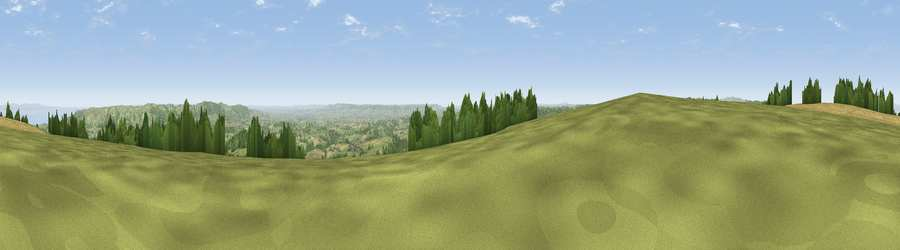

Viewpoint near Elworthy
#2387 in England · top 10% of its area beats it · near ElworthyThe view, rendered

A 360° render of this exact spot computed from the terrain model, tree cover and land cover — summer colours, afternoon light, calibrated against photographs of famous viewpoints. Real trees, hedges and buildings will differ in detail.
The panorama
Grey silhouette: terrain skyline in each direction (720 bearings, Earth curvature and refraction included). Dashed green: skyline with trees (+15 m) and buildings (+8 m) as obstacles. Blue strip: how far the ground is visible on each bearing.
Where the view opens
Wedge length = distance to the farthest visible ground on that bearing (vegetation-aware). Rings at 10, 25 and 50 km.
What fills the view
52% grassland · 25% woodland · 16% cropland · 5% water · 1% built-up
Angular shares of the visible panorama (visual magnitude), not map area. Landscape diversity 0.52 (0–1 Shannon).
Key numbers
More beautiful places nearby
The staircase of upgrades: each row has a higher view potential than everything closer. Driving times are estimates from straight-line distance, calibrated against real road routing — check an actual route before setting out.
| Place | Direction | Drive | Score |
|---|---|---|---|
| Viewpoint near Elworthy | N · 1 km | ~4 min | 79.2 |
| Viewpoint near Roadwater | NW · 4 km | ~10 min | 83.6 |
| Viewpoint near Roadwater | NW · 5 km | ~11 min | 84.2 |
| Viewpoint near Roadwater | NW · 8 km | ~16 min | 85.2 |
| Viewpoint near West Quantoxhead | NE · 9 km | ~18 min | 87.8 |
| Viewpoint near West Quantoxhead | NNE · 9 km | ~18 min | 88.7 |
| Holdstone Hill | WNW · 47 km | ~68 min | 90.2 |
| The Knoll | SE · 65 km | ~88 min | 91.0 |
51.09642, -3.32698 · source: screening · position refined by local search. Computed location — check access rights before visiting.